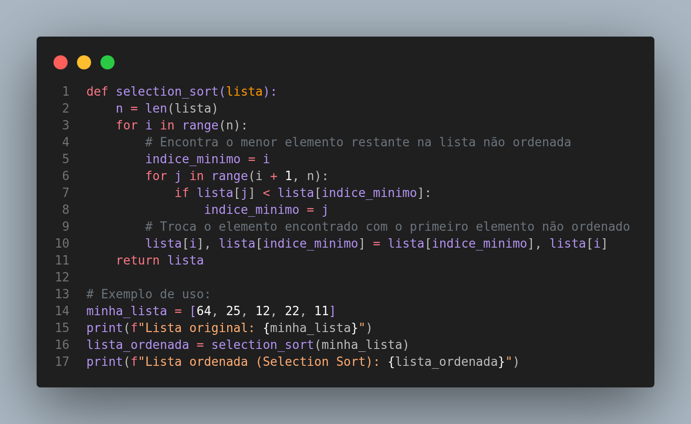

O Selection Sort, ou Ordenação por Seleção, é outro algoritmo de ordenação simples e intuitivo. Ele divide a lista em duas partes: uma parte ordenada e uma parte não ordenada. O algoritmo encontra repetidamente o menor (ou maior) elemento da parte não ordenada e o move para o final da parte ordenada.
Analogia: Pense em organizar um conjunto de frutas em uma banca. Você olha para todas as frutas disponíveis, escolhe a menor (ou a mais bonita, dependendo do seu critério), coloca-a em uma nova cesta (a parte ordenada) e a remove da pilha original. Você repete esse processo até que todas as frutas estejam na nova cesta, ordenadas.
Complexidade: Assim como o Bubble Sort, o Selection Sort também possui uma complexidade de O(n²) no pior, médio e melhor caso. Isso ocorre porque ele sempre precisa percorrer a parte não ordenada da lista para encontrar o próximo elemento, independentemente do estado inicial da lista.
